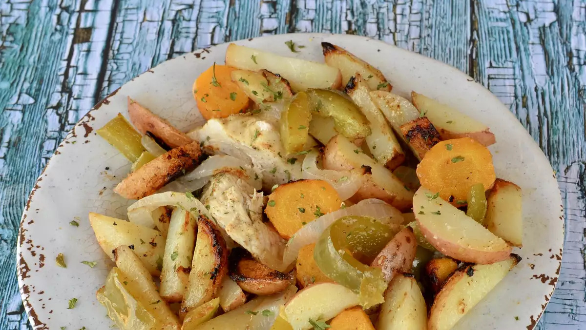

Grilled Chicken and Potato Foil Packs

Description
Moist, flavorful chicken with potatoes, onions, bell peppers, and mushrooms cooked on the grill in foil packs, makes clean-up a breeze!
Ingredients
- 4 skinless, boneless chicken breast halves
- 4 large potatoes, peeled and cut into 1/4-inch slices
- 2 large onions, cut into 1/4 inch thick slices
- Preheat an outdoor grill for medium-high heat.
- Stir together the vegetable oil, cider vinegar, garlic powder, black pepper, salt, basil, and thyme in a bowl; set aside.